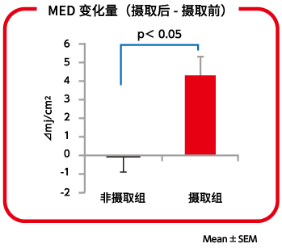
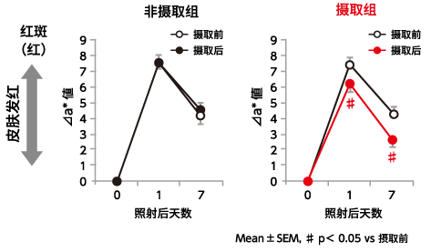
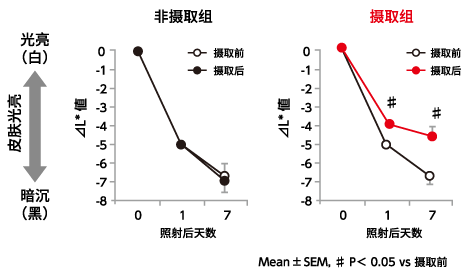

提高皮肤对紫外线的抵抗性
紫外线引起的皮肤功能性障碍与对策
受到紫外线照射而使皮肤变红的“红斑”，是皮肤产生功能性障碍的第一个征兆。长期持续性受到紫外线照射时，作为慢性障碍被称为光老化的一系列症状会随着年龄的增长而表面化。从色斑、皱纹和皮肤松弛开始，甚至可能会演变成良性肿瘤、或经癌前状态后变成恶性肿瘤（癌）。
说到紫外线大家就会联想到夏天，实际上令皮肤产生红斑的紫外线一年四季都在照射。对于紫外线的预防对策，“避免不必要的紫外线照射”很重要，使用遮阳伞、帽子及长袖衣服等预防紫外线的对策是有效的。近年来，除了来自外部的紫外线预防对策外，还期待通过摄取食品从身体内部实施紫外线预防措施。
含有胶原蛋白肽及牛奶神经酰胺的酸奶能提高皮肤对紫外线的抵抗性
通过5周摄取含胶原蛋白肽和牛奶神经酰胺酸奶的实验，显示皮肤对紫外线抵抗性的MED（最小红斑量）这一数值显著上升，抑制了紫外线照射后皮肤的红斑（见红）和色素沉着。通过持续摄取含有胶原蛋白肽和牛奶神经酰胺的酸奶，可抑制每天的紫外线伤害积累，长期可能有预防光老化的效果。
1．显示皮肤抵抗紫外线的MED（最小红斑量）的上升
 |
 |
 |
※根据2016年4月《现代环境中的紫外线威胁及其最新对策》研讨会资料作图
2．抑制皮肤见红（红斑）

※根据2016年4月《现代环境中的紫外线威胁及其最新对策》研讨会资料作图
3．抑制色素沉着

※根据2016年4月《现代环境中的紫外线威胁及其最新对策》研讨会资料作图
| 对象 |
・30岁以上未满50岁的健康的日本女性，自觉皮肤干燥者
・FitzpatrickのSkin PhototypeⅡ者（从春天到夏天，进行30-45分钟日光浴后皮肤容易变红，稍微呈黑的皮肤光型）
・22名（实验食品摄取群12名、非摄取群10名） |
| 实验食品 |
将源自鱼原料的胶原蛋白肽1,000mg和牛奶神经酰胺（作为鞘磷脂10mg）混合制成的LB81乳酸菌酸奶190g |
| 实验设计 |
开放两组比较实验（连续5周每天摄取或不摄取实验食品，在摄取前及摄取4周后实施紫外线照射实验） |
| 实验期 |
2015年10月～11月 |